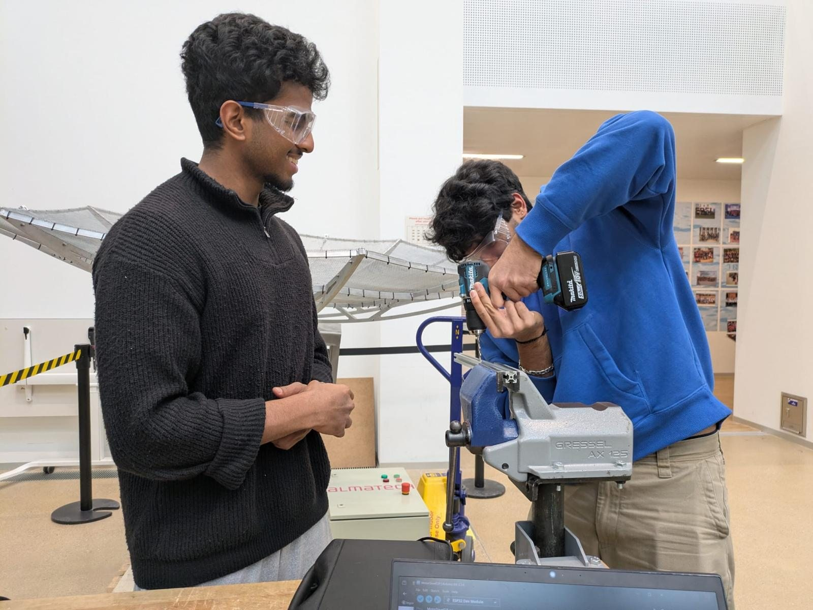

Mars Rover
2025–26
A student-built Mars rover for the XRC competition. It had to find its own way, climb over rocks and handle slopes, then pick up samples with its own arm. We took it from blank page to competition day.
- Period
- Oct 2025 – May 2026
- Context
- XRC competition team
- Highlights
- Rocker-bogie suspension, 5-axis arm
- Tools
- Fusion 360, 3D printing, laser cutting, welding
-
The brief
A multidisciplinary team, one rover. It had to navigate autonomously, get over obstacles and hold its own on steep inclines. I co-designed it from the first concept to the prototype we took to competition.
-
Drivetrain & wheels
I worked out motor torque, speed and power against obstacle size, approach angle and slope, so we knew the drivetrain would cope before anything was built. The tyres are custom PTU, iterated through several tread designs to balance stiffness and grip on rocky ground.
-
Suspension
A rocker-bogie differential keeps every wheel on the ground when one side climbs, so the rover stays stable over uneven terrain.
-
The arm
A 5-axis arm for collecting and handling samples. I covered the kinematics, picked the actuators and designed the mechanism.
-
Chassis
Designed together with the electrical and software teams. The LIDAR, sensors and computer each needed a proper home, and the layout had to work for everyone.
-
Making it real
The whole rover was modelled, assembled and simulated in Fusion 360, then built with 3D printing, laser cutting and welding into a working machine.